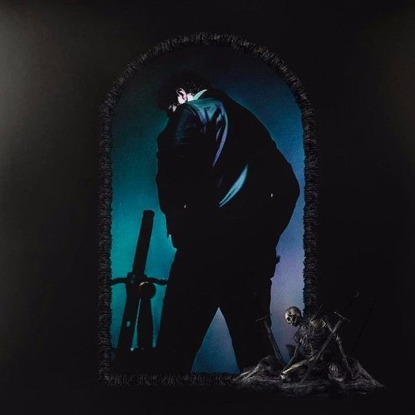

O artista comprou a batida instrumental por 30 dólares, escreveu e gravou em apenas um dia. Segundo ele, a letra é influenciada pelas dificuldades da vida que passava na época. Alcançou o top 1 nos EUA e conquistou um recorde permanecendo nessa posição por 19 semanas consecutivas.
Post Malone ft. Swae Lee
Sunflower
Uma música feita para sua futura esposa, que explodiu com duas outras versões dela, sendo duetos, um com a cantora americana Beyoncé, e outro com a cantora italiana Andrea Bocelli. A música atingiu o top 1 em 18 países.

Halsey
Without Me
Segundo a artista a música fala sobre relacionamentos que ela experenciou ou observou, e é um lembrete de que você não deve deixar outras pessoas tirarem vantagem de você. Foi a primeira música dela como cantora principal a alcançar o top 1 nos EUA.
Billie Eillish
Bad Guy
A letra fala sobre seu amante ser um “bad guy” ao mesmo tempo que sugere que ela é mais “casca grossa” do que ele, também aborda temas sobre misandria e sarcasmo. A música alcançou o top 1 nos EUA tirando a música “Old Town Road” do topo após 19 semanas.
Post Malone
WOW
Segundo o artista a música foi feita celebrar seu enorme sucesso, ostentando de tudo um pouco na frente de todos que duvidaram da sua habilidade de alcançar o topo. A música chegou ao top 2 nos EUA.